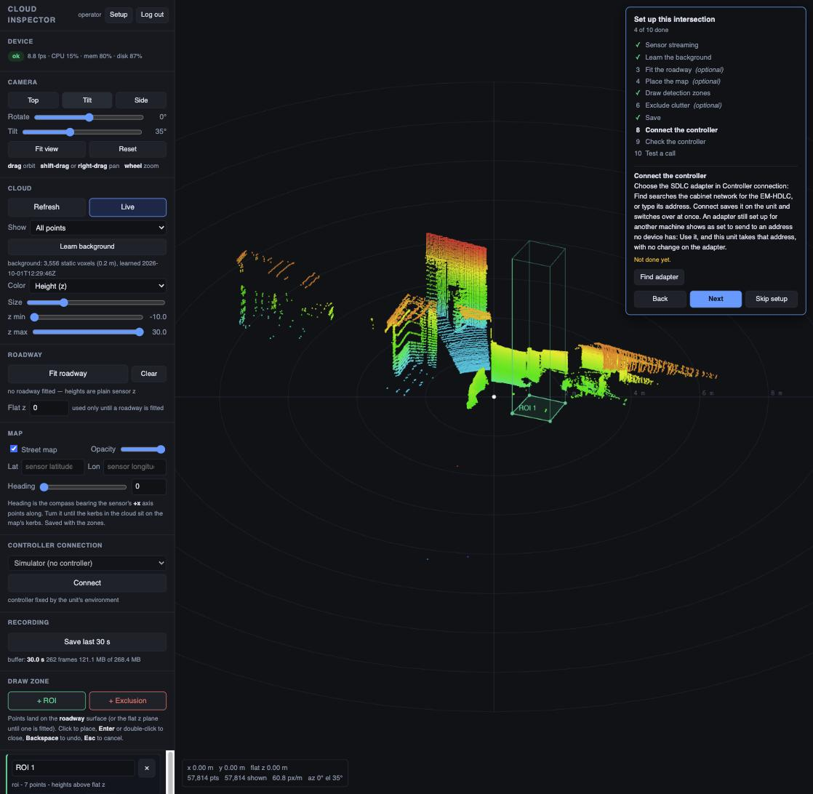

OpenTraffic turns a sensor on the pole and an NVIDIA Jetson in the signal cabinet into vehicle detection. LiDAR today; radar, other LiDARs and cameras through open adapters. Draw zones on the road and it places detector calls on the controller over the cabinet's SDLC bus — no proprietary detection box required.

The detector is the part that must never stop. Everything else — the web page, the setup guide — runs only while someone is looking.
Zones, presence and calls work on 3D points, not on any one product. Bring LiDAR, radar or cameras through a small adapter.
Places detector calls over SDLC (TS2 Port 1) through a Luxcom EM-HDLC, and reads signal state back on the same link.
Detection and exclusion zones over OpenStreetMap, each tied to a detector channel. Heights are measured from the fitted roadway, not the sensor.
A call goes out after 3 s of continuous presence and drops the moment the zone clears. Hysteresis keeps a car on the edge from chattering.
The detector API is loopback-only. The inspector starts on demand behind a login and stops after 15 idle minutes.
An open /healthz for uptime checks, and a token-protected /health report with sensor, background and link detail.
A fixed sensor sees the same static scene every frame. Anything that isn't part of it, inside a zone, for long enough, is a vehicle waiting for green — whatever the sensor.
A sensor adapter delivers frames of 3D points. The rest of the pipeline never knows which sensor made them.
20 s learn of the empty scene in 0.2 m voxels. Deliberately never adapts — a waiting car must not fade away.
Moving points inside a zone, above the roadway, outside every exclusion.
Enough points for 3 s without a break makes the zone present.
SDLC detector call to the controller on the zone's channel.
An adapter is one class: it yields frames of 3D points in metres. Background learning, the roadway fit, zones, presence, calls and the setup page all work on those points, unchanged.
from sensors.base import Lidar as Sensor # base class for every sensor
from sensors.types import PointCloudFrame
class MyRadar(Sensor):
"""Any sensor that can see the road."""
def frames(self):
for scan in self.device.stream():
yield PointCloudFrame(
xyz=scan.points, # (N, 3) metres
timestamp=scan.time,
sensor_name="my-radar",
)
def close(self):
self.device.disconnect()Shipped, plus clip replay for development without hardware.
Any spinning or solid-state unit with an SDK that returns points.
4D imaging radars already emit point clouds with height.
Stereo or depth cameras, or detections projected onto the roadway.
The core works end to end — detection to a live call on the controller. Next comes the field, and more sensors.
Reference cabinet: NVIDIA Jetson · Luxcom EM-HDLC · Siemens M60 (SEPAC 5.7)
Develop on a Mac with a sensor wired in — or with none at all, replaying a recording. Deploy to the Jetson with one script.
git clone https://github.com/brundige/OpenTraffic.git
cd OpenTraffic
pip install -r requirements.txt
python auth.py set-password # username "operator"
python main.py # open http://127.0.0.1:8080
# no sensor? replay a clip
python main.py --source data/clips/<clip>.npz --realtimegit clone https://github.com/brundige/OpenTraffic.git ~/opentraffic
cd ~/opentraffic
# once per unit, as root
sudo LIDAR_IF=<port> UNIT_NAME=<name> deploy/provision-host.sh
# build, start, install the inspector — no sudo
deploy/install.sh
# update later
git pull && deploy/install.shTraffic engineers, signal technicians, LiDAR, radar, computer-vision and embedded folks — new sensor adapters, field results, bug reports and pull requests are all welcome.